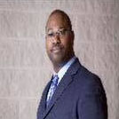

This years' Speaker: Little Tom Jackson
Little Tom Jackson was born 1961 in Chicago. Illinois. Little Tom grew up on the Southside of Chicago. He surrendered his life to Jesus at a young age and began serving Him. After high school. he attended Loyola University and majored in Psychology and Theatre.
In l989, Little Tom had a life-changing encounter with God. He rededicated his life to the Lord and began working in the Chicago Public Schools coaching kindergarten and first grade teachers. Little Tom has been coaching, mentoring, and partnering with teachers for 27 years.
In 2002, God directed Little Tom to return to college to learn American Sign Language. During his time back in college, Little Tom got involved in a deaf ministry at Oak Brook Community Deaf Church.
In 2011, Little is now Senior Pastor of that very same deaf church. He attended the Living Word School of Ministry, as directed by God, and is currently in his sixth year of ministering to the Deaf, teaching them to use their gifts and talents to advance the kingdom of God.
Little Tom and his wife, Jenna Ford Jackson reside in the LaGrange area with their two incredibly talented children, Brandon, age l7 1/2 and Lauren, age 14.